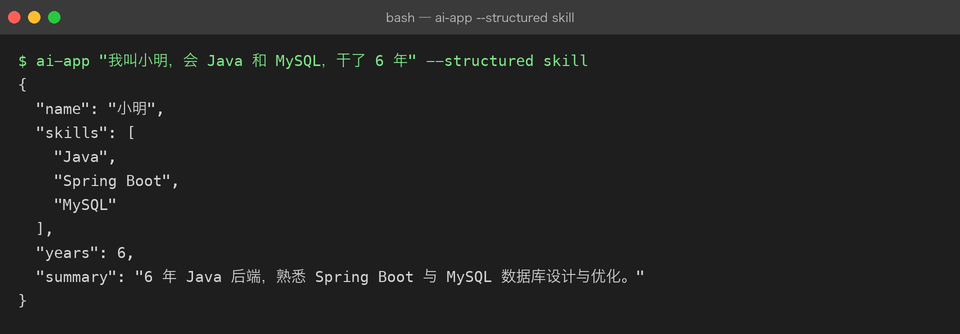
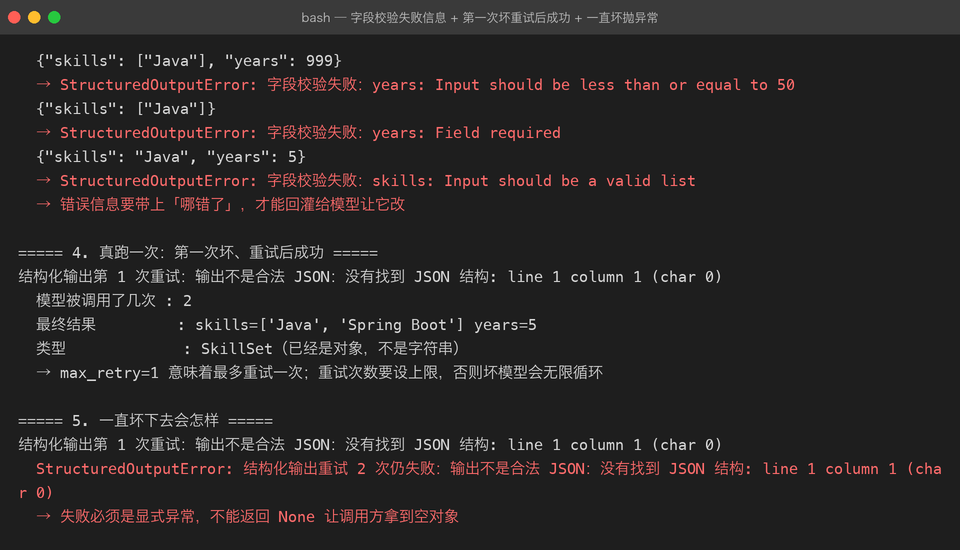

Project 03 — Chapter 03：Structured Output【结构化输出】
状态：✅ 已校对 对应代码：
src/assistant/schema.py
1. 项目要增加什么能力
到目前为止，模型的输出是自然语言字符串：
reply = await client.chat(messages) # reply: str
print(reply) # "好的，根据您的要求……"给人看没问题。但程序要用就麻烦了：
# 想拿模型抽取出的「技能列表」？
text = "候选人的技能包括：Java、Spring Boot、MySQL"
skills = ??? # 正则？split("、")？换个问法就崩本章目标：
让模型输出可被程序稳定消费的结构化数据（JSON），并且校验失败时能自动重试。
这是「AI 玩具」和「AI 应用」的分水岭——只要结果要进数据库、要传给下游系统，就必须结构化。
2. 为什么需要这个知识
非结构化输出的三宗罪：
1. 不可靠 —— 同一问题、同一 Prompt，模型这次说「Java、MySQL」，下次说「1. Java 2. MySQL」
2. 不可测 —— 断言写什么？assert "Java" in reply？换个措辞就假失败
3. 不可组合 —— 下游要的是一个对象，你只能给它一段话而结构化输出能把「模型的模糊性」关在最外一层：里面是确定的数据，外面是一次可能失败的解析。
3. 核心概念
3.1 三种手段，强度递增
| 手段 | 做法 | 保证强度 | 代价 |
|---|---|---|---|
| ① Prompt 约定 | 在 Prompt 里写「只输出 JSON」 | 弱：可能带解释、带代码块围栏 | 零成本 |
| ② JSON Mode | response_format={"type": "json_object"} | 中：保证是合法 JSON，不保证字段 | 需在 Prompt 里出现 "json" 字样 |
| ③ 工具/函数调用 | 用 tools + tool_choice 强制按 schema 输出 | 强：字段与类型都受约束 | 请求更复杂（Chapter 08） |
选择口诀：
只要能用 ③ 就用 ③（schema 强制）
模型/平台不支持时用 ②
① 永远只作为兜底，且必须配健壮的解析与重试3.2 用 Pydantic 定义「要什么」
from pydantic import BaseModel, Field
class SkillExtraction(BaseModel):
name: str = Field(description="候选人姓名")
skills: list[str] = Field(description="技能列表，标准英文原名")
years: int = Field(description="工作年限", ge=0, le=40)
summary: str = Field(description="一句话总结", max_length=100)Pydantic 同时给了你两样东西：
1. JSON Schema —— 发给模型，告诉它要输出什么形状
2. 运行时校验 —— 模型输出后立刻校验，类型不对直接 ValidationErrorSkillExtraction.model_json_schema() # → dict，直接塞进请求
SkillExtraction.model_validate(obj) # → 校验并构造，失败抛 ValidationError3.3 完整链路
Pydantic 模型
↓ model_json_schema()
JSON Schema
↓ 放进请求（JSON Mode 的 schema / 工具的 parameters）
模型输出 JSON 字符串
↓ json.loads()（先剥掉 ```json 围栏）
dict
↓ Model.model_validate()
校验通过 → 强类型对象 | 校验失败 → 带修正提示重试一次3.4 解析要健壮：先剥围栏
模型即使开了 JSON Mode，也常常裹一层 markdown 围栏：
{"name": "张三", "skills": ["Java"]}
import json, re
_FENCE = re.compile(r"^\s*```(?:json)?\s*|\s*```\s*$", re.M)
def extract_json(raw: str) -> dict:
cleaned = _FENCE.sub("", raw).strip()
try:
return json.loads(cleaned)
except json.JSONDecodeError:
# 退一步：抓第一个 {...} 到最后一个 }
start, end = cleaned.find("{"), cleaned.rfind("}")
if start == -1 or end <= start:
raise
return json.loads(cleaned[start:end + 1])3.5 校验失败要重试，且要把错误告诉模型
async def structured(client, messages, model_cls, max_retry: int = 1):
schema = model_cls.model_json_schema()
last_err = ""
for attempt in range(max_retry + 1):
extra = [{"role": "user", "content": f"上一轮输出不符合要求：{last_err}。请严格按 schema 重新输出。"}] if last_err else []
raw = await client.chat(messages + extra, response_format={"type": "json_object"}, schema=schema)
try:
return model_cls.model_validate(extract_json(raw))
except (json.JSONDecodeError, ValidationError) as e:
last_err = str(e)[:300]
raise StructuredOutputError(f"结构化输出重试 {max_retry + 1} 次仍失败：{last_err}")关键点：把校验错误原文回灌给模型。模型看到「years 字段应该是整数但收到了字符串 '三年'」通常一次就改对了。
4. 项目代码
src/assistant/
├── schema.py # extract_json() / structured() / StructuredOutputError
├── errors.py # StructuredOutputError(LLMError)
├── prompts.py # EXTRACT 模板
└── api.py # POST /chat/structured —— 返回强类型 JSON对外接口应该长这样：
result: SkillExtraction = await structured(client, messages, SkillExtraction)
print(result.skills) # 有 IDE 补全、有类型检查5. Java ↔ Python 对比
| Java | Python | 说明 |
|---|---|---|
record SkillExtraction(...) | class SkillExtraction(BaseModel) | Pydantic ≈ record + Jackson + Bean Validation 三合一 |
Jackson @JsonProperty | Pydantic Field(alias=...) | 同 |
ObjectMapper.readValue(json, X.class) | Model.model_validate(obj) | 同 |
@NotNull @Size(max=100) | Field(max_length=100) | 同 |
JsonSchemaGenerator | model_json_schema() | 同 |
异常 JsonProcessingException | ValidationError | 同 |
| 接口契约（OpenAPI） | JSON Schema | 同一套 schema，人和模型都读它 |
最值得记住的类比：
JSON Schema 就是给模型的接口契约。 你给下游服务写 OpenAPI 文档，给模型写 JSON Schema——目的是一样的：把「约定」变成「可校验的机器可读格式」。
6. 常见坑
坑 1：json.loads 之后直接用
data = json.loads(raw)
name = data["name"] # ❌ KeyError / 类型可能是 None一定要过一遍 Pydantic，让校验发生在边界，而不是散落在业务代码里。
坑 2：schema 太复杂，模型反而更容易错
❌ 一个 20 字段、3 层嵌套、带联合类型的 schema
✅ 拆成两次调用，每次只要 5 个字段经验值：字段超过 ~10 个或嵌套超过 2 层，成功率明显下降。
坑 3：max_tokens 把 JSON 截断了
这是最隐蔽的一个：模型输出了一半，max_tokens 用完，你拿到 {"name": "张三", "skills": ["Ja——json.loads 直接失败。
解法：结构化输出要给足 max_tokens，并且截断要能被识别（检查 finish_reason == "length"）。
坑 4：以为 JSON Mode 等于「字段一定对」
JSON Mode 只保证语法是合法 JSON，{"error": "我不知道"} 也是合法 JSON。字段对不对，仍然要靠 Pydantic 校验。
坑 5：数字被输出成字符串
模型很爱把 years 输出成 "3 年"。Pydantic 默认会尝试把 "3" 转成 3，但 "3 年" 不行——这就是需要重试的场景。
坑 6：把重试写成无限循环
一定设上限（建议 1 次重试 = 最多 2 次调用）。无限重试 = 无限烧钱。
7. 实战挑战
挑战 1：实现 extract_json()，能处理裸 JSON、带 ```json 围栏、前后带解释文字三种情况。
挑战 2：实现 structured()，校验失败时把 ValidationError 精简后回灌重试一次，成功返回强类型对象。
挑战 3（进阶）：给 structured() 加一个「降级」分支——连续失败时返回一个 partial=True 的对象（能解析出几个字段算几个），而不是直接抛异常。
8. 主动回忆
- 三种结构化手段的强度排序是什么？各自保证什么、不保证什么？
- Pydantic 模型同时提供了哪两样东西？
- 为什么解析前要先剥 ```json 围栏？
- 校验失败重试时，为什么要把错误信息回灌给模型？
max_tokens太小会导致什么隐蔽问题？- JSON Mode 能保证字段正确吗？为什么？
9. 本节完成标准
- [ ] 有一个 Pydantic 模型描述至少一种抽取结果
- [ ]
extract_json()能处理围栏与前后废话 - [ ]
structured()校验失败会重试一次，且重试有上限 - [ ] 结构化输出给了足够的
max_tokens，能识别finish_reason == "length" - [ ] 有真实调用验证：返回的是强类型对象，不是字符串
下一章：04-streaming.md —— 让等待不那么难熬。
真实运行
结构化输出路径（ai-app "..." --structured skill），schema.py 解析 + Pydantic 校验后拿到强类型对象：

